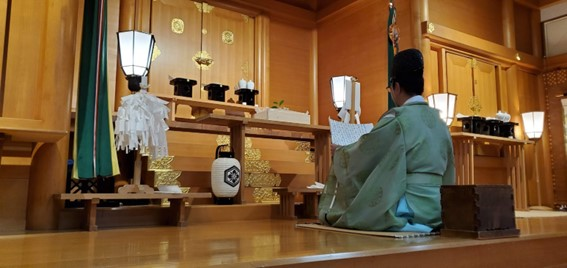

御祈祷初穂料改定のお知らせ
投稿日: 2025.3.22
蜃ｺ髮ｲ螟ｧ遉ｾ譚ｱ莠ｬ蛻�逾�
譁ｰ 逹� 諠� 蝣ｱ
蠕｡逾育･ｷ蛻晉ｩよ侭謾ｹ螳壹�ｮ縺顔衍繧峨○
莉､蜥�7蟷ｴ4譛�15譌･(轣ｫ)繧医ｊ蠕｡逾育･ｷ縺ｮ蛻晉ｩよ侭繧呈隼螳壹＆縺帙※縺�縺溘□縺阪∪縺吶��
荳�鬘俶э縺ｫ縺､縺阪��8,000蜀�繝ｻ15,000蜀�繝ｻ30,000蜀�繝ｻ50,000蜀�繝ｻ100,000蜀�莉･荳翫→縺ｪ繧翫∪縺吶��
逾育･ｷ譎る俣縺ｯ蠕捺擂騾壹ｊ縲∝壕蜑�10譎ゅ�ｻ11譎ゅ�ｻ豁｣蜊医�ｻ蜊亥ｾ�1譎ゅ�ｻ2譎ゅ�ｻ3譎ゅ�ｮ縺｡繧�縺�縺ｩ縺ｮ譎る俣縺ｧ陦後＞縺ｾ縺吶�る幕蟋区凾髢薙�ｮ15蛻�蜑阪↓縺ｯ蜿嶺ｻ倥↓縺願ｶ翫＠荳九＆縺�縺ｾ縺帙��
荳�闊ｬ逾育･ｷ縺ｮ莠育ｴ�縺ｯ蜿嶺ｻ倥¢縺ｦ縺斐＊縺�縺ｾ縺帙ｓ縲�
蟆壹�∫･ｭ蜈ｸ繧�陦御ｺ九↑縺ｩ縺後≠繧区凾縺ｯ縲∝ｾ｡逾育･ｷ縺瑚｡後∴縺ｪ縺�蝣ｴ蜷医′縺斐＊縺�縺ｾ縺吶�ｮ縺ｧ縲√＃蟶梧悍譌･縺ｫ蠕｡逾育･ｷ繧定｡後▲縺ｦ縺�繧九°髮ｻ隧ｱ縺ｧ遒ｺ隱阪＠縺ｦ縺�縺溘□縺代ｋ縺ｨ蜀�貊代↓莠九′騾ｲ縺ｿ縺ｾ縺吶��
謌ｻ繧�
お問い合わせ
出雲大社東京分祠
〒106-0032 東京都港区六本木7-18-5
TEL: 03-3401-9301
受付時間: 午前9時～午後5時